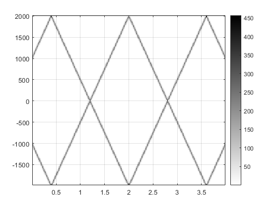
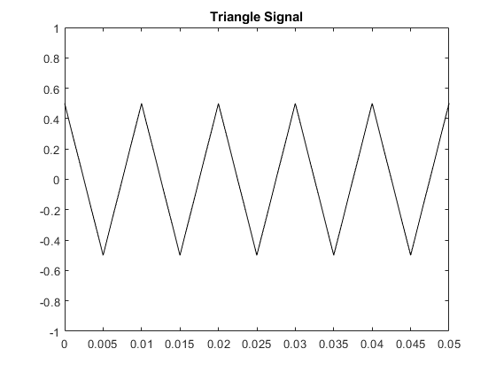
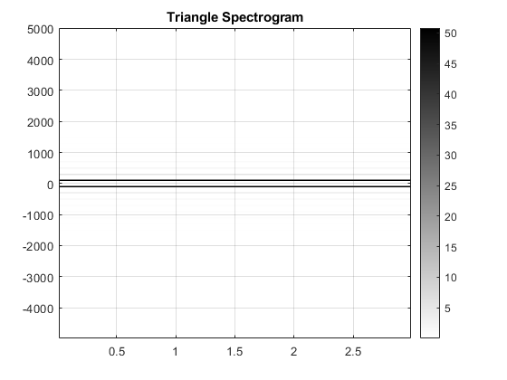
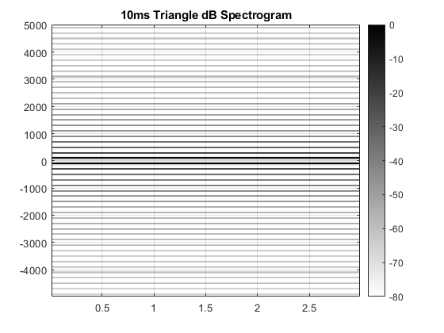
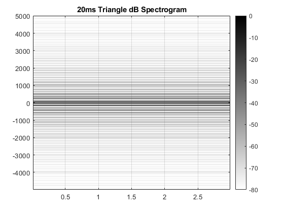
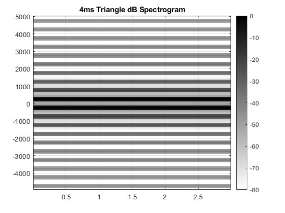
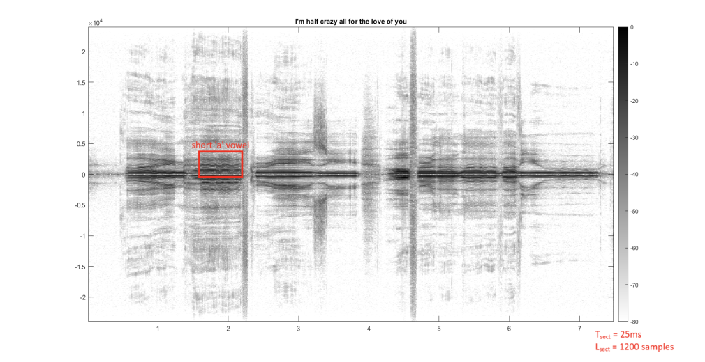
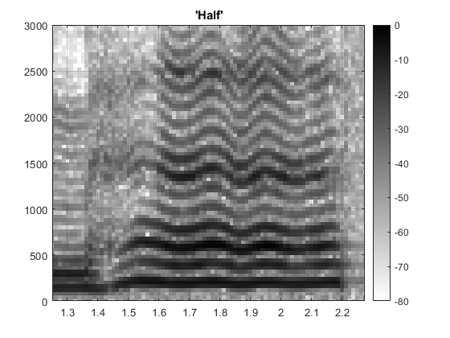
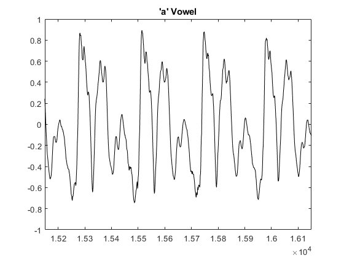

Sampling and Aliasing: Lab S-8: 2 Lab Exercise
Contents
2.1a)
When the frequency continues to rise above half the sampling rate, the frequency aliases backwards, and will continue until it aliases to 0Hz and then will continue to oscillate.
Mu is the half the slope of the change in frequency, so μ = (11,000Hz – 1,000Hz) ÷ (4s – 0s) ÷ 2 = 1,250
F-sub-zero is the starting frequency, so f_0 = 1,000Hz
Phi is the phase offset, which is not defined, so we choose φ = 0.
Chirp formula: cos(ψ(t)) = 2π(1250)t^2 + 2π(1000)t + 0
2.1b)
Here we generate a spectrogram using L_sect as 128
fSamp = 4000; % Hertz dt = 1/fSamp; % seconds tStart = 0; % seconds tStop = 4; % seconds tt = tStart:dt:tStop; fStart = 1000; % Hertz fStop = 11000; % Hertz mu = ((fStop-fStart)/(tStop-tStart))/2; fzero = fStart; % Hertz phi = 0; psi = 2*pi*mu*tt.^2 + 2*pi*fzero*tt + phi; cc = real(7.7*exp(1j*psi)); lSect = 128; % should be a power of 2 %soundsc(cc, fSamp); % plays the sound figure plotspec(cc + 1j*1e-12, fSamp, lSect) colorbar grid on
L_sect represents a certain number of samples. Since the sampling rate is 4000Hz, which is a sampling period of 0.25ms, the T_sect is L_sect times the sampling period (lSect*dt) which is 32ms when L_sect equals 128.
L_sect = 128 samples T_sect = 0.032 s
ans =
Image with properties:
CData: [128×249 double]
CDataMapping: 'scaled'
Use GET to show all properties
 2.1c)
As the frequency reaches half of the sampling frequency, the samples occur at two equal amplitude but opposite sign points in the sinusoid. As the frequency increases to exactly the sampling rate, the samples occur at the same point in the sinusoid at each sample, the the sampled signal appears to not be moving and have a frequency of 0 Hz. This is why the sampled frequency reverses at half the sampling frequency and continues down to 0 Hz. Once the frequency continue above the sampling frequency, the samples are taken slight further ahead in the cycle each time, resulting in a small sampled frequency. This continues to increase until reaching 1.5 times the sampling frequency where it is again sampling opposite amplitudes, but this time a cycle apart instead of within the same cycle. The original effect then occurs and it cycles up and down, never reaching the actual frequency being sampled.
2.2.1a)
This is a simple script that generates a triangle wave given parameters.
fSamp = sampling frequency dt = 1/fSamp tStop = stop time T = period Amp = amplitude tt = 0:dt:tStop qq = rem(tt, T) xx = Amp*(4/T)*(abs(qq-(0.5*T))-0.25*T)
2.2.1b)
Here we execute the above code with a period of 10ms, a sampling rate of 10,000Hz, and a total duration of 3s. We then plot 5 periods.
fSamp = 10000; dt = 1/fSamp; tStop = 3; T = 0.010; Amp = 0.5; tt = 0:dt:tStop; qq = rem(tt, T); xx = Amp*(4/T)*(abs(qq-(0.5*T))-0.25*T); figure plot(tt, xx, 'k-') axis([0, 5*T, -1, 1]) title('Triangle Signal')
2.2.1c)
Here we make the spectrogram of the triangle wave using plotspec(). We choose the L_sect to 5 times the period.
tSect = 5*T; lSect = round(tSect*fSamp); % must be an integer %soundsc(xx, fSamp); % plays the sound figure plotspec(xx + 1j*1e-12, fSamp, lSect) colorbar grid on title('Triangle Spectrogram')
T_sect = 0.050 s L_sect = 500 samples
ans =
Image with properties:
CData: [500×119 double]
CDataMapping: 'scaled'
Use GET to show all properties
 2.2.1d)
Spectrum bands are visible at the fundamental frequency, 100Hz, then at 300Hz, then 500Hz, then every 200Hz there are new and ever fainter spectrum bands. They are not visible after 1,000Hz.
List of visible: 100 Hz, 300 Hz, 500 Hz, 700 Hz, 900 Hz
2.2.1e)
As stated above, the fundamental frequency is 100Hz, the first and darkest spectrum band.
Fundamental Frequency = 100 Hz
2.2.1f)
The amplitude at 100Hz is 50.78. The amplitude at 300Hz is 5.66. The ratio between these two is 0.111.
|a_1| = 50.78 |a_3| = 5.66
2.2.2a)
Decibels works by taking the input number, taking the log-base-10 of it and multiplying it by 20. 20*log10(2) = 6.0206. Similarly, because of how the log function works, 20*log10(0.5) = -6.0206. Therefore, a difference of 6dB is about a ratio of a factor of 2.
2.2.2b)
The change between each coefficient is that k increases by 2, therefore the ratio between two non-zero coefficients is (-2/(pi^2*k^2))/(-2/(pi^2*(k+2)^2)) which simplifies to ((k+2)^2)/k^2. When taking the log of this value when converting to dB, it can be further simplified to 2*dB((k+2)/k), which shows that the difference is dependent only on k.
Difference between |a_1| and |a_3| = 19.08 dB
2.2.2c)
We can replace k and k+2 with any valid values to find the difference between any two coefficients. The difference between a_15 and a_1 is 40*log10(15/1) = 47.04.
Distance of |a_15| below |a_1|: 47.04 dB
2.2.3a)
Here we again create the spectrogram of the triangle wave, but this time using plotspecDB(), which uses a logarithmic scale.
tSect = 5*T; lSect = round(tSect*fSamp); % must be an integer %soundsc(xx, fSamp); % plays the sound figure plotspecDB(xx + 1j*1e-12, fSamp, lSect, 80) colorbar grid on title('10ms Triangle dB Spectrogram')
All of the spectrum lines are now clearly visible. The pattern from the first time, 100Hz then every 200Hz after that, is still present, but now it extends well past 1,000Hz and is now visible all the way to the Nyquist frequency.
List: 100 Hz, 300 Hz, 500 Hz, 700 Hz, 900 Hz, 1100 Hz, 1300 Hz, 1500 Hz, 1700 Hz, 1900 Hz, 2100 Hz, 2300 Hz, 2500 Hz, 2700 Hz, 2900 Hz, 3100 Hz, 3300 Hz, 3500 Hz, 3700 Hz, 3900 Hz, 4100 Hz, 4300 Hz, 4500 Hz, 4700 Hz, 4900 Hz
ans =
Image with properties:
CData: [500×119 double]
CDataMapping: 'scaled'
Use GET to show all properties
 2.2.3b)
Now we double the period and graph the spectrogram again.
T = 0.020; qq = rem(tt, T); xx = Amp*(4/T)*(abs(qq-(0.5*T))-0.25*T); tSect = 3*T; lSect = round(tSect*fSamp); % must be an integer %soundsc(xx, fSamp); % plays the sound figure plotspecDB(xx + 1j*1e-12, fSamp, lSect, 80) colorbar grid on title('20ms Triangle dB Spectrogram')
The fundamental frequency is now 50Hz. The highest spectrum band is at 4,950Hz, which is the 50th visible line.
Fundamental Frequency = 50 Hz Highest Frequency = 4950 Hz Harmonic Number of Highest Frequency = 99
ans =
Image with properties:
CData: [600×99 double]
CDataMapping: 'scaled'
Use GET to show all properties
 2.2.3c)
The first harmonic line has a decibel amplitude of 0, the next line has a decibel amplitude of -19.08dB. This is the exact same difference found before (i.e. 2*20*log10(3)).
a_1 = 0 dB a_3 = -19.08 dB
Before, when we were measuring amplitude, we found that a_1 had an amplitude of 50.78 and a_3 had an amplitude of 5.66. The reason that a_1 becomes 0 dB is that decibels are a relative scale, so 0 is arbitrarily chosen. In this case, the highest amplitude (50.78) is set as 0 and everything else is relative to that (i.e. 20log10(5.66/50.78) = -19.08).
2.2.3d)
Now we change the period to only 4ms and plot the spectrogram again.
T = 0.004; qq = rem(tt, T); xx = Amp*(4/T)*(abs(qq-(0.5*T))-0.25*T); tSect = 3*T; lSect = round(tSect*fSamp); % must be an integer %soundsc(xx, fSamp); % plays the sound figure plotspecDB(xx + 1j*1e-12, fSamp, lSect, 80) colorbar grid on title('4ms Triangle dB Spectrogram')
ans =
Image with properties:
CData: [120×499 double]
CDataMapping: 'scaled'
Use GET to show all properties
 2.3.1)
Here we load in a 7-second voice sample to find the "AAH" sound and zoom in on it.
load('48000_bicycle_built_for_two.mat', 'data'); fSamp = 48000; vv = data(370000:end, 1)'; % gets the left channel, second half of audio tSect = 0.025; lSect = round(tSect*fSamp); % must be an integer %soundsc(vv, fSamp); figure plotspecDB(vv + 1j*1e-12, fSamp, lSect, 80) axis([1.25, 2.275, 0, fSamp/16]) colorbar grid on title("'Half'")
After some testing, Tsect of 25ms gave the cleanest vowel lines. Multiplying this by the sampling frequency gives the Lsect, which is 1200.
T_sect = 0.025 s L_sect = 1200 samples

The 'a' vowel from the word "half" is annotated in the red box.
ans =
Image with properties:
CData: [1200×598 double]
CDataMapping: 'scaled'
Use GET to show all properties
 2.3.2)
The short 'a' vowel has a fundamental frequency of about 200Hz (G3). This corresponds to a fundamental period of 5ms.
Fundamental Frequency = 200 Hz Fundamental Period = 0.005 s
2.3.3)
figure plot(vv(69800:105600), 'k-') axis([15150, 16150, -1, 1]) title("'a' Vowel")
By directly measuring the distance between the peaks in the waveform, we found an average difference of 233 samples, which is 4.85ms. This is very close to the 5ms found in 2.3.2: a difference of only 6Hz.
2.3.4)
By measuring the distances between peaks in the time domain plot, I was able to find a very accurate value for the fundamental period during that very small amount of time. By instead finding the fundamental frequency from the frequency domain plot, I could only find what seemed to be the middle of the darkest line, which may have made the measurement less accurate, however, the frequency domain gave a much better idea of what the average frequency over a large amount of time was.